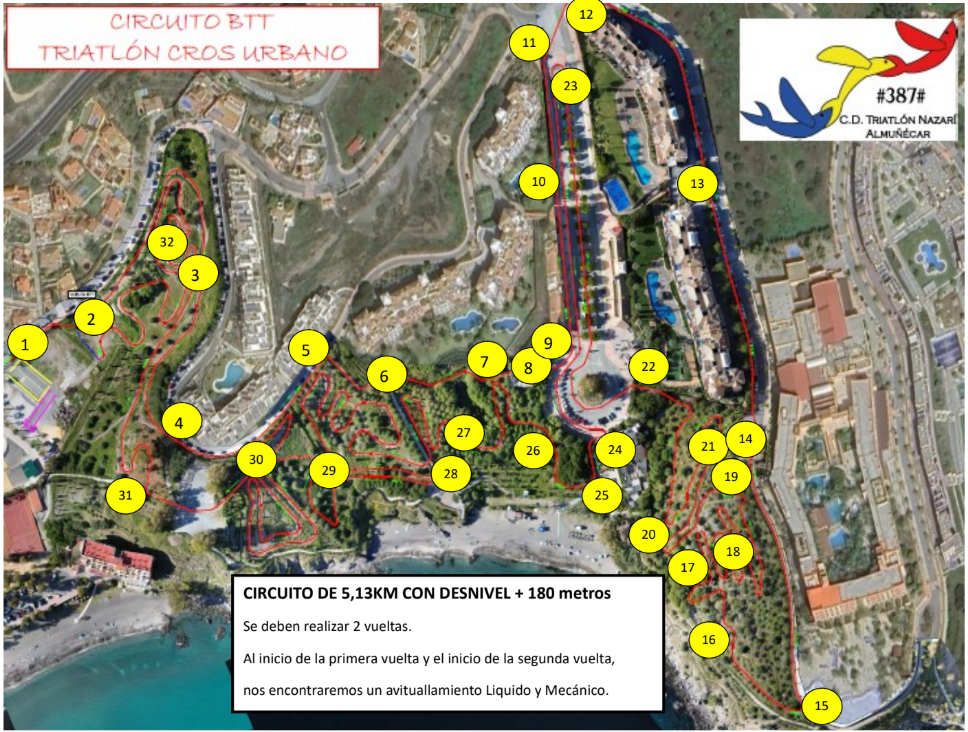

Voluntariado Triatlón Nazari 2025
1 - Salida de la T1 acera. Este punto lo cubre
CARLOS OLMO Y MANOLO PERALTA, solo se usa hasta que salga el último deportista en bici.
Ver mapa2 - Entrada al circuito, avituallamiento, giro de segunda vuelta. Este punto será cubierto por
EDUARDO JIMENEZ.
Ver mapa3 - Salto de piedra y alternativas. Este punto si es posible será
PROTECCION CIVIL.
Ver mapa4 - Inicio calle mayor Zaragoza.
CABALLERO VERDE.
Ver mapa5 - Fin calle mayor Zaragoza.
CABALLERO VERDE.
Ver mapa6 - Cruce en bajada adoquines.
PABLITO Ver mapa7 - Inicio escalera mirador y controlar el tramo de vuelta.
PADRE CHIPI Ver mapa8 - Mirador. Controlar el paso a la urbanización.
JAVI MADRIDISTA Ver mapa9 - Bajada mirador e intersección rotonda.
RAFA ORTEGA Ver mapa10 - Subida acera, entrada urbanización.
DAVID MAQUINA Ver mapa11 - Glorieta alta.
CABALLERO VERDE JUANJO Ver mapa12 - Glorieta alta entrada hotel.
CABALLERO VERDE Ver mapa13 - Recta calle hotel. Este punto cubierto por dos voluntarios sobre todo la urbanización.
FRAN CHARCUTERO Y JAIME Ver mapa14 - Glorieta fin de hotel. Evitar el paso de peatones al parque.
FRANCIS PICHA Ver mapa15 - Punto Oficial.
CARMEN ALBALADEJO Ver mapa16 - Curva nueva chipipar.
LUIS PERALTA Ver mapa17 - Curva palet.
MARCOS PERALTA Ver mapa18 - Subida en zig zag.
PACO MOTRI Ver mapa19 - Salto chipi parck. MUY IMPORTANTE
PROTECCION CIVIL Ver mapa20 - Comienzo camino adoquines. Este a ser posible alguien del club para cubrir la carrera también.
ALEX CABRERA Ver mapa21 - Alto Adoquines y comprobar parte trasera de calabajio.
JUANMI FEO Ver mapa22 - Salida rotonda calabajio.
PROTECCION CIVIL Ver mapa23 - Giro acera alto.
JONATHAN TORRES Ver mapa24 - 1ª escalera calabajio.
PADRE VALENTIN Ver mapa25 - Giro playa.
ALEX PEREZ (CARRERA A PIE) Ver mapa26 - Baños pinos.
JAVIER HOLGADO Ver mapa28 - Mirador era.
PRIMO ROBERTO Ver mapa29 - Entrada zona 2.
MANOLO CARIBE Ver mapa30 - Enlace zona 1-2.
JOSE MONTILLA Ver mapa31 - Entrada vuelta circuito escuela.
CARMENCITA Y ANTONIO Ver mapa32 - Frente casa yayo.
SERGIO AMBULANCIA Ver mapa